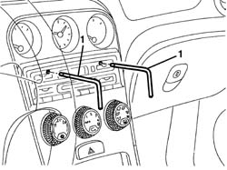
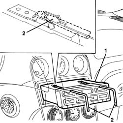
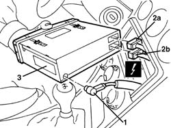
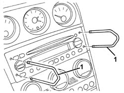
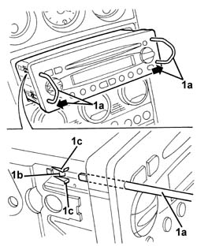
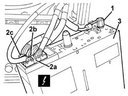

5570T80 car radio unit - r+r
- Path
- Procedures > 55 ELECTRICAL EQUIPMENT > 5570 ACCESSORIES > 5570T car radio and car telephone > 5570T80 car radio unit - r+r
- Kind
- repair procedure (removal / refitting; the operation number is the code)
- Applies to
- all engines; all production periods
- Interactive page
- https://sloeber94.github.io/elrnDB-a156/en/#/3238514
Applies to: all engines; all production periods
 Removing
Removing
 Refitting
RefittingUse the radio removal tools supplied with the car.
1. Fit both tools into the slots on the front of the radio and push in until the mechanism holding the radio in place clicks open.

Applies to: all engines; all production periods
1. Pull out the radio using the tools.
2. Release the tools and take out.

Applies to: all engines; all production periods
1. Disconnect the aerial coaxial connection.
2. Disconnect radio electrical connections (2a (2b).
 | Name | Connector |
|---|---|---|
2a | Car radio |
| Name | Connector |
|---|---|---|
2b | Car radio |
3. Take out the radio

Applies to: all engines; all production periods
Refitting
RemovingConnect the electrical connections and the radio aerial lead.
Check the radio and speakers are working properly.
Fit the radio into into its compartment, taking care not to compress the electrical wires.
Push the radio fully home until it locks in place.
Applies to: all engines; all production periods; only with equipment: Radio Telephone
Applies to: all engines; production: da 03/02 a 09/03, da 10/03
Removing
RefittingUse the radio removal tools supplied with the car.
1. Fit both tools into the slots on the front of the radio and push in until the mechanism holding the radio in place clicks open.

Applies to: all engines; production: da 03/02 a 09/03, da 10/03
1. Extract the radio pulling it out using the tools (1a); during the extraction, the tools (1a) should be pressed gently outwards to faciliate the attachment of the retainers (1b) and the release of the tabs (1c).
2. Remove the tools.

Applies to: all engines; production: da 03/02 a 09/03, da 10/03
1. Disconnect the aerial coaxial connection.
2. Disconnect the electrical connections (2a, 2b, 2c).
| Name | Connector |
|---|---|---|
2a | Car radio |
| Name | Connector |
|---|---|---|
2a | Car radio |
| Name | Connector |
|---|---|---|
2a | Car radio |
| Name | Connector |
|---|---|---|
2b | Car radio |
| Name | Connector |
|---|---|---|
2c | Car radio |
3. Take out the radio

Applies to: all engines; production: da 03/02 a 09/03, da 10/03
Refitting
RemovingCheck that the radio is not damaged.
Connect the electrical connection.
Connect the connection for the aerial coaxial cable.
Check that the radio is working.
Fit the radio into into its compartment, taking care not to compress the electrical wires.
Push the radio fully home until it locks in place.
Topics linked from this page (6)
- 5570T86 radio/phone set - r r
- P20A Car radio ( FACIA )
- P20B Car radio ( FACIA )
- P20C Car radio ( FACIA )
- P20D Car radio ( FACIA )
- P20E Car radio ( FACIA )
Topics that link to this page (40)
- 2127A12 hand lever of manual gearbox with hydraulic selection - r r
- 2127A70 support for control levers for manual gearbox with hydraulic selection and handbrake - r r
- 5010B24 under-facia air ducts r r
- 5010B46 central air duct to rear seat - arrange
- 5010B47 side air duct to rear seat(one), lh or rh - r r
- 5010C24 upper air outlet on facia - r r
- 5010D17 mixed air upper sensor - r r
- 5010D27 upper mixed air temperature sensor (1), lh or rh - r r following electrical circuit check
- 5010D30 passenger compartment air temperature sensor - r+r following electrical wiring check operation
- 5020A10 heater box - r+r
- 5020B10 heater control support - r+r
- 5020B28 air conditioner symbol light bulb/s - includes control panel r+r
- 5020B31 air distribution flap control cable(one) - r r
- 5020B42 air mixer flap control cable - r+r
- 5020B80 heater system wiring bundle - r r or replace
- 5020L10 additional heater system boiler - r r
- 5040B30 expansion valve (tube orifice) - r+r
- 5040C10 air conditioner box - r+r
- 5040C50 air conditioner heater radiator - r+r
- 5040D18 air conditioner control unit - r r
- 5040D52 air inlet and recirculation flap actuator - r r
- 5040D76 air contitioner distribution flap control motor - r r
- 5040D84 air conditioner left hand air mixer flap control motor - r r
- 5040D86 air conditioner right hand air mixer flap control motor - r r
- 5040D90 air conditioner system wiring bundle - r r
- 5505A26 bonnet wiring - r r
- 5505C31 under-facia wiring - r r
- 5505C41 cabin wiring - r r
- 5560C51 combined analogue control panel - r+r or replace
- 5560C64 electronic unit(infocentre) - replace after checking operation with special equipment
- 5570T32 lead from coaxial to radio - r r
- 5580C86 side bag wiring harness (one) lh or rh - r r or replace
- 5580E18 anti-theft device w/l - r+r following electrical wiring check
- 7040A10 instrument facia trim - r+r
- 7040A25 central facia trim - r r
- 7040A60 under facia trim - r+r
- 7040A97 facia trim support beam - r r
- 7040L10 cabin floor carpet - r r
- 7040L20 tunnel trim - r r
- 7065A80 pre-tensioner wiring - r r